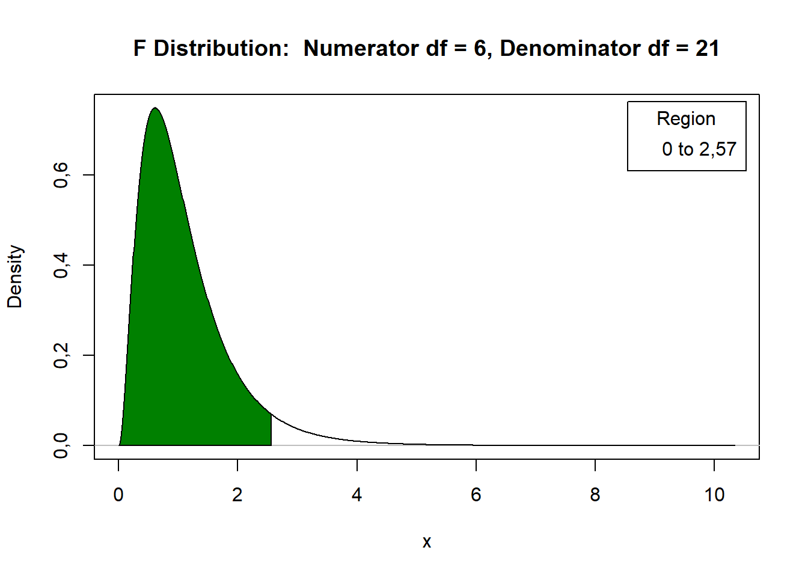

Regressão polinomial
Fundamentos
Relação funcional
Modelo:
\[y = f(X) + \epsilon\]
em que \(f(X)\) é uma função desconhecida.
Objetivos:
Obter uma função que represente \(f(X)\), aproximadamente;
Obter o nível de \(x\) que leva à máxima/mínima resposta;
Obter a dose econômica (é necessário conhecer a equação de lucro e o preço do nutriente);
Função Polinomial de grau “p”
\[y = \beta_0 + \beta_1 X + \beta_2X^2 + \ldots + \beta_pX^p + \epsilon\]
Características:
Fácil ajuste;
Interpretação limitada ao intervalo de estudo;
Exemplo
Tabela 1. Peso de 1000 sementes de feijão, em g, em função da dose de gesso, em kg/ha
| Dose | I | II | III | IV |
|---|---|---|---|---|
| 0 | 134,8 | 139,7 | 147,6 | 132,3 |
| 50 | 161,7 | 157,7 | 150,3 | 144,7 |
| 100 | 160,7 | 172,7 | 163,4 | 161,3 |
| 150 | 169,8 | 168,2 | 160,7 | 161,0 |
| 200 | 165,7 | 160,0 | 158,2 | 151,0 |
| 250 | 171,8 | 157,3 | 150,4 | 160,4 |
| 300 | 154,5 | 160,4 | 148,8 | 154,0 |
Gráfico 1: Distribuição dos peso de 1000 sementes de feijão em gramas pela dose de gesso aplicada em kg/ha

Quadro da ANOVA
| Fonte de Variação | gl | SQ | QM | F | Ftab\(_{\alpha = 0,05}\) | valor-p |
|---|---|---|---|---|---|---|
| Doses | 6 | 1941,83 | 323,64 | 7,67 | 2,57 | 0,00018763 |
| Resíduo | 21 | 886,34 | 42,21 | |||
| Total | 27 | 2828,17 |

\[H_0: \text{Não há efeito de dose}\]
\[H_1: \mbox{Há efeito de dose.}\]
Polinômio
Se \(I\) é o número de níveis do fator quantitativo \[\Downarrow\] Ajuste de um polinômio de no máximo grau (\(I-1\))
No exemplo: \(I = 7\) doses de gesso, 0, 50, 100, 150, 200, 250 e 300. Logo podemos ajustar um polinômio de grau no máximo 6.
Sem efeito de dose
Gráfico 2: Linha de tendência sem efeito de dose de gesso aplicada
Polinômio de grau 1
Gráfico 3: Linha de tendência função de primeiro grau.

\[\underbrace{\beta_0 + \beta_1X } + \underbrace{{\beta_{2}X^{2} + \beta_{3}X^{3} + \beta_{4}X^{4} + \beta_{5}X^{5} + \beta_{6}X^{6}}}\]
| Fontes de Variação | gl |
|---|---|
| Doses | 6 |
| Regressão Linear | 1 |
| Desvios de Regressão | 5 |
| Resíduo | 21 |
| Total | 27 |
Hipóteses: Desvios de Regressão
\[H_0: \beta_2,\beta_3,\beta_4,\beta_5,\beta_6=0 | \beta_0, \beta_1 \mbox{ estão no modelo}\]
\[H_1: \beta_k\neq0 | \beta_0,\beta_1 \mbox{ estão no modelo, para algum } k=2,\ldots,6\]
Hipóteses: Regressão Linear
\[H_0: \beta_1=0 | \beta_0 \mbox{ está no modelo}\]
\[H_1: \beta_1\neq0 | \beta_0 \mbox{ está no modelo}\]
Polinômio de grau 2
Gráfico 4: Linha de tendência função quadrática
\[\underbrace{\beta_0 + \beta_1X +\beta_{2}X^{2}} + \underbrace{|{\beta_{3}X^{3} + \beta_{4}X^{4} + \beta_{5}X^{5} + \beta_{6}X^{6}}}\]
| Fontes de Variação | gl |
|---|---|
| Doses | 6 |
| Termo Linear | 1 |
| Termo Quadrático | 1 |
| Desvios de Regressão | 4 |
| Resíduo | 21 |
| Total | 27 |
Hipóteses:
\[H_0: \beta_3,\beta_4,\beta_5,\beta_6=0 | \beta_0,\beta_1,\beta_2 \mbox{ estão no modelo}\]
\[H_1: \beta_k\neq0 | \beta_0,\beta_1,\beta_2 \mbox{ estão no modelo, para algum } k=3,\ldots,6\]
| Fontes de Variação | gl |
|---|---|
| Doses | 6 |
| Termo Linear | 1 |
| Termo Quadrático | 1 |
| Desvios de Regressão | 4 |
| Resíduo | 21 |
| Total | 27 |
Hipóteses: Regressão Quadrática
\[H_0: \beta_2=0 | \beta_0,\beta_1 \mbox{ estão no modelo}\]
\[H_1: \beta_2\neq0 | \beta_0,\beta_1 \mbox{ estão no modelo}\]
Se Desvios de Regressão for não significativo \(\Rightarrow\) verificar a significância da Regressão Quadrática;
Se Desvios de Regressão for significativo \(\Rightarrow\) continuar “procurando’’ pelo modelo.
Polinômio de grau 3
Gráfico 5: Linha de tendência função cúbica

\[\underbrace{\beta_0 + \beta_1X +\beta_{2}X^{2}+\beta_{3}X^{3}} + \underbrace{|{\beta_{4}X^{4} + \beta_{5}X^{5} + \beta_{6}X^{6}}}\]
| Fontes de Variação | gl |
|---|---|
| Doses | 6 |
| Termo Linear | 1 |
| Termo Quadrático | 1 |
| Termo Cúbico | 1 |
| Desvios de Regressão | 3 |
| Resíduo | 21 |
| Total | 27 |
Hipóteses: Desvios de Regressão
\[H_0: \beta_4,\beta_5,\beta_6=0 | \beta_0,\beta_1,\beta_2, \beta_3 \mbox{ estão no modelo}\]
\[H_1: \beta_k\neq0 | \beta_0,\beta_1,\beta_2,\beta_3 \mbox{ estão no modelo, para algum } k=4,5,6\]
Hipóteses: Regressão Cúbica
\[H_0: \beta_3=0 | \beta_0,\beta_1,\beta_2 \mbox{ estão no modelo}\]
\[H_1: \beta_3\neq0 | \beta_0,\beta_1,\beta_2 \mbox{ estão no modelo}\]
Polinômio de grau 4
Gráfico 6: Linha de tendência para função de 4 grau
\[\underbrace{\beta_0 + \beta_1X +\beta_{2}X^{2}+\beta_{3}X^{3}+\beta_{4}X^{4}} + \underbrace{|{\beta_{5}X^{5} + \beta_{6}X^{6}}}\]
Polinômio de grau 5
Gráfico 6: Linha de tendência para função de 5º grau
\[\underbrace{\beta_0 + \beta_1X +\beta_{2}X^{2}+\beta_{3}X^{3}+\beta_{4}X^{4}+\beta_{5}X^{5}} + \underbrace{|{\beta_{6}X^{6}}}\]
Polinômio de grau 6
Gráfico 7: Linha de tendência para função de 6º grau

\[\underbrace{\beta_0 + \beta_1X +\beta_{2}X^{2}+\beta_{3}X^{3}+\beta_{4}X^{4}+\beta_{5}X^{5}+\beta_{6}X^{6}}\]
Generalizando
Hipóteses:
\[ H_0: \mbox{Não há falta de ajuste no modelo}\]
\[H_1: \mbox{Há falta de ajuste no modelo} \]
\[ H_0: \beta_1 = 0 | \beta_0 \mbox{ está no modelo}\]
\[H_1: \beta_1 \neq 0 | \beta_0 \mbox{ está no modelo} \]
Hipóteses:
\[ H_0: \mbox{Não há falta de ajuste no modelo}\]
\[H_1: \mbox{Há falta de ajuste no modelo} \]
\[ H_0: \beta_2 = 0 | \beta_0, \beta_1 \mbox{ estão no modelo}\]
\[H_1: \beta_2 \neq 0 | \beta_0, \beta_1 \mbox{ estão no modelo} \]
Hipóteses:
\[ H_0: \mbox{Não há falta de ajuste no modelo}\]
\[H_1: \mbox{Há falta de ajuste no modelo} \]
\[ H_0: \beta_3 = 0 | \beta_0, \beta_1, \beta_2 \mbox{ estão no modelo}\]
\[H_1: \beta_3 \neq 0 | \beta_0, \beta_1, \beta_2 \mbox{ estão no modelo}\]
| Fontes de Variação | gl |
|---|---|
| Tratamentos | I-1 |
| Termo linear (\(\beta_1|\beta_0\)) | 1 |
| Termo quadrático (\(\beta_2|\beta_0, \beta_1\)) | 1 |
| Termo cúbico (\(\beta_3|\beta_0, \beta_1, \beta_2\)) | 1 |
| Falta de Ajuste (\(\beta_4, \ldots, \beta_{I-1}|\beta_0, \beta_1, \beta_2, \beta_3\)) | I-4 |
| Resíduo | I(J-1) |
| Total | IJ-1 |
Observação
\[H_0: \beta_p = 0 | \beta_0, \beta_1, \ldots, \beta_{p-1} \mbox{ estão no modelo}\]
\[H_1: \beta_p \neq 0 | \beta_0, \beta_1, \ldots, \beta_{p-1} \mbox{ estão no modelo}\]
seja pela rejeição de \(H_0\).
Dado o modelo de regressão polinomial,
\[y_{ij} = \beta_0 + \beta_1X_{i} + \beta_2X_i^2 + \beta_3X_i^3 + \ldots + \beta_{I_1}X_i^{I-1} + \epsilon_{ij},\]
tem-se que: existe dependência entre \(X_i, \; X_i^2, \; X_i^3, \; \ldots, X_i^{I-1}\), o que dificulta a obtenção dos parâmetros (\(\beta_0, \; \beta_1, \; \beta_2, \; \beta_3, \ldots, \beta_{I-1}\)) e, consequentemente, o cálculo das respectivas somas de quadrados.
\[y_{ij} = b_0P_{0i} + b_1P_{1i} + b_2P_{2i} + \ldots + b_{I-1}P_{(I-1)i} + \epsilon_{ij},\]
em que, \(b_0, b_1, b_2, \ldots, b_{I-1}\) são parâmetros a serem estimados, \(P_{0i}, P_{1i}, P_{2i}, \ldots, P_{(I-1)i}\) são polinômios ortogonais, desde que atendam as condições:
\(P_{0i} = 1\),
\(\sum_iP_{ki} = 0, \quad k=1,\ldots,{I-1}\),
\(\sum_iP_{ki}P_{k'i} = 0\), para \(k\neq k'\).
| Dose | Total | Média | \(1^o\) | \(2^o\) | \(3^o\) | \(4^o\) | \(5^o\) | |
|---|---|---|---|---|---|---|---|---|
| 0 | 554,4 | 138,600 | -3 | +5 | -1 | +3 | -1 | |
| 50 | 614,4 | 153,600 | -2 | 0 | +1 | -7 | +4 | |
| 100 | 658,1 | 164,525 | -1 | -3 | +1 | +1 | -5 | |
| 150 | 659,7 | 164,925 | 0 | -4 | 0 | +6 | 0 | |
| 200 | 634,9 | 158,725 | +1 | -3 | -1 | +1 | +5 | |
| 250 | 639,9 | 159,975 | +2 | 0 | -1 | -7 | -4 | |
| 300 | 617,7 | 154,425 | +3 | +5 | +1 | +3 | +1 | |
| - | 4379,1 | - | K | 28 | 84 | 6 | 154 | 84 |
| - | - | - | M | 1 | 1 | 1/6 | 7/12 | 7/20 |
\[\underbrace{\beta_0 + \beta_1X } + \underbrace{|{\beta_{2}X^{2} + \beta_{3}X^{3} + \beta_{4}X^{4} + \beta_{5}X^{5} + \beta_{6}X^{6}}}\]
| Fontes de Variação | gl | SQ | QM | F | Ftab | valor-p Doses |
|---|---|---|---|---|---|---|
| Termo linear | 1 | |||||
| Desvios de Regressão | 5 | |||||
| Resíduo | 21 | |||||
| Total | 27 | 2828,17 |
\[ SQ\_{Termo ; Linear} = \frac{\left(J\times \sum_i{a_{1i}\hat{\mu}_i}\right)^2}{J \times \sum_i a_{1i}^2} = \frac{\left(\sum_i{a_{1i}T_i}\right)^2}{K_1\times J} = (-3\times 554,4 -2\times 614,4 - 658,1 + 0\times 659,7 \quad + 634,9 + 2\times 639,9 + 3\times 617,7)\^2 / \left(28\times 4\right) = 423,15 \]
\[SQ\_{Falta ; Aj} = SQ\_{Trat} - SQ\_{Termo ; Linear} = 1941,83 - 423,15 = 1518,68\]
\[QM_{Falta \; Aj} = \frac{SQ_{Falta \; Aj}}{gl_{Falta \; Aj}} = \frac{1518,68}{5} = 303,74\]
\[F_{Falta \; Aj} = \frac{QM_{Falta \; Aj}}{QM_{Res}} = \frac{303,74}{42,21} = 7,20\]
\[F_{Tab_{(5\%, 5,21)}} = 2,68\]
\[H_0: \beta_2, \beta_3, \ldots, \beta_6 = 0|\beta_0, \beta_1 \text{ no modelo}\]
\[H_a: \beta_k\neq 0|\beta_0, \beta_1 \text{ no modelo, para algum } k=2,\ldots,6\]
| Fontes de Variação | gl | SQ | QM | F | Ftab | valor-p |
|---|---|---|---|---|---|---|
| Doses | 6 | 1941,83 | ||||
| Termo linear | 1 | 423,15 | 423,15 | 10,03 | 4,32 | 0,00465 |
| Desvios de Regressão | 5 | 1518,68 | 303,74 | 7,20 | 2,68 | 0,00046 |
| Resíduo | 21 | 886,34 | 42,21 | |||
| Total | 27 | 2828,17 |
\[\underbrace{\beta_0 + \beta_1X +\beta_{2}X^{2}} + \underbrace{|{\beta_{3}X^{3} + \beta_{4}X^{4} + \beta_{5}X^{5} + \beta_{6}X^{6}}}\]
| Fontes de Variação | gl | SQ | QM | F | Ftab | valor-p |
|---|---|---|---|---|---|---|
| Doses | 6 | 1941,83 | ||||
| Termo linear | 1 | 423,15 | ||||
| Termo quadrático | 1 | |||||
| Desvios de Regressão | 4 | |||||
| Resíduo | 21 | |||||
| Total | 27 | 2828,1 |
\[SQ_{Termo;Quad} = \frac{(J \times \sum_i{a_{2i}\hat{\mu}_i})^2}{J \times \sum_i a_{2i}^2} = \frac{( \sum_i{a_{2i}T_i})^2}{J \times K_2}= (5\times 554,4 +0\times 614,4 - 3\times 658,1 -4 \times 659,7 -3\times 634,9 + 0\times 639,9 + 5\times 617,7)^2 (84\times 4)= 1285,84\]
\[SQ_{Falta \; Aj} = SQ_{Trat} - SQ_{Termo \; Linear} - SQ_{Termo \; Quad} = 1941,83 - 423,15 - 1285,84 = 232,83\]
\[QM_{Falta; Aj} = \frac{SQ_{Falta; Aj}}{gl_{Falta; Aj}} = \frac{232,83}{4} = 58,21\]
\[F_{Falta \; Aj} = \frac{QM_{Falta \; Aj}}{QM_{Res}} = \frac{58,21}{42,21} = 1,38\]
\[F_{Tab_{(5\%, 4,21)}} = 2,84\]
\[QM_{Termo ; Quad} = \frac{SQ_{Termo \; Quad}}{gl_{Termo \; Quad}} = \frac{1285,84}{1} = 1285,84\]
\[F_{Termo ; Quad} = \frac{QM_{Termo; Quad}}{QM_{Res}} = \frac{1285,84}{42,21} = 30,47\]
\[F_{Tab_{(5\%, 1,21)}} = 4,32\]
| Fontes de Variação | gl | SQ | QM | F | Ftab | valor-p |
|---|---|---|---|---|---|---|
| Doses | 6 | 1941,83 | 3 | |||
| Termo linear | 1 | 423,15 | 423,15 | 10,03 | 4,32 | 0,00465 |
| Termo quadrático | 1 | 1285,84 | 1285,84 | 30,47 | 4,32 | 2\(\times 10^{-5}\) |
| Desvios de Regressão | 4 | 232,83 | 58,21 | 1,38 | 2,84 | 0,27505 |
| Resíduo | 21 | 886,34 | 42,21 | |||
| Total | 27 | 2828,17 |
\[H_0: \beta_3,\beta_4\ldots,\beta_6 = 0| \beta_0,\beta_1,\beta_2\text{ no modelo}\]
\[H_1: \beta_k \neq 0 | \beta_0,\beta_1,\beta_2\text{ no modelo, para algum } k=3,\ldots,6\]
\[H_0: \beta_2 = 0| \beta_0,\beta_1\text{ no modelo}\]
\[H_1: \beta_2 \neq 0 | \beta_0,\beta_1\text{ no modelo}\]
Estimação dos Parâmetros
Obter \(\beta_0\), \(\beta_1\), \(\ldots\), \(\beta_p\), tais que
\[\mbox{SQ} = \sum_i\big[y_i - (\beta_0 + \beta_1X_i + \beta_2X_i^2 + \ldots + \beta_pX_i^p)\big]^2\] seja mínima.
Ou seja,
\[. \frac{\partial{SQ}}{\partial \beta_0} = 0 \frac{\partial \mbox{SQ}}{\partial \beta_1} = 0 \ldots \frac{\partial \mbox{SQ}}{\partial \beta_p} = 0 \Rightarrow \hat{\beta}_0, \hat{\beta}_1, \ldots, \hat{\beta}_p \]
Solução de Mínimos Quadrados
Estimação dos Parâmetros
O modelo ajustado ainda pode ser dado por:
\[\hat{y}_{ij} = \bar{y} + B_1M_1P_{1i} + B_2M_2P_{2i} + \ldots + B_kM_kP_{ki},\]
em que \(B\) e \(M\) são obtidos na tabela,
\[B_p = \frac{\sum_{i=1}^{I}c_{pi}Ti}{K_p\times J},\]
\[P_{1i} = x, \; P_{2i} = X_i^2-\frac{I^2-1}{12}, \; P_{3i} = X_i^3-\frac{3I^2-7}{20}, ...\]
\(x_i = \frac{X_i-\bar{X}}{q}\), em que \(q\) é a distância entre os níveis (devem ser equidistantes) e \(I\) é o número de níveis (Pimentel-Gomes, 2000).
Modelo ajustado
\[{\hat{y} = 140,7839286 + 0,2736250x - 0,0007825X^2}\]

Coeficiente de Determinação
Definição
\[R^2 = \frac{\mbox{SQ Modelo}}{\mbox{SQ Tratamentos}} = 1 - \frac{\mbox{SQ Falta de Ajuste}}{\mbox{SQTratamentos}}\]
\[0\leq R^2 \leq 1\]
Proporção da variabilidade devida a tratamentos que é explicada pelo modelo de regressão;
Quão maior o grau do polinômio, maior será o coeficiente de determinação.
\[R^2 = \frac{\mbox{SQ Modelo}}{\mbox{SQ Tratamentos}} = \frac{\mbox{SQ TL + SQ TQ}}{\mbox{SQ Tratamentos}} = \frac{423,15 + 1285,84}{1941,83} = 0,8801.\]
Atividades
Em um experimento de adubação em eucalipto (Eucalyptus grandis) conduzido em casa de vegetação, foram usadas 4 doses de K (0, 30, 60 e 90 ppm), obtendo-se as alturas, em cm, apresentadas no conjunto de dados a seguir. Considerando-se que o experimento foi conduzido segundo o delineamento inteiramente casualizado com 3 repetições, pede-se:
Tabela
Dose Altura
| Doses | Altura | ||
|---|---|---|---|
| I | II | III | |
| 0 | 80 | 86 | 71 |
| 30 | 144 | 151 | 97 |
| 60 | 151 | 127 | 117 |
| 90 | 70 | 85 | 92 |
Faça a análise descrita dos dados apresentando comentários;
Encontre o modelo de regressão polinomial que melhor representa a altura das plantas em função da dose de K aplicada. Justifique sua escolha apresentado as hipóteses de interesse e conclusões assumindo o nível de 5% de significância. Apresente as estimativas dos parâmetros para tal modelo;
Há uma dose que leva à máxima altura? Se sim, qual seria?
Faça o upload da resolução e tire suas aqui